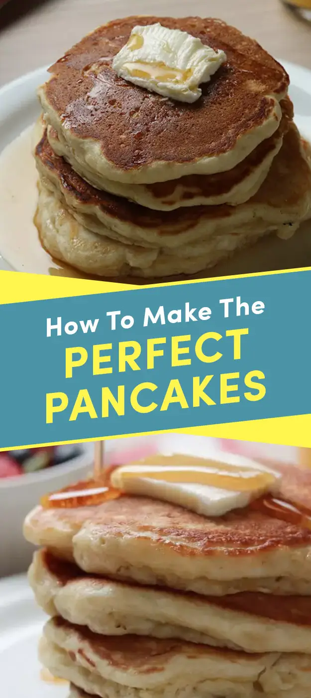

Here's The Ultimate Buttermilk Pancakes Recipe

- 2 1/2 cups all-purpose flour
- 3 tablespoons sugar
- 2 tspn kosher salt
- 1 tspn baking powder
- 1 tspn baking soda
- 2 1/2 cups buttermilk
- 8 tblspn (1 stick) unsalted butter melted
- 2 eggs, whites and yalks separated
- 1 tblspn unsalted butter, plus more for serving
- berries of choice
- Chocolate chips
- Maple syrup
- In a large bowl, add the flour, sugar, salt, baking powder, and baking soda and whisk to combine.
- In a medium bowl or liquid measuring cup, add the buttermilk, melted butter, and egg yolks and whisk to combine.
- Add the buttermilk mixture to the dry ingredients and gently fold with a rubber spatula until just combined.
- Add the egg whites and fold until just combined. Be sure not to overmix. Some lumps are okay.
- Let the batter rest for 15–30 minutes at room temperature.
- Add the butter to a cast iron skillet and heat over medium low heat. Once the butter has melted and is bubbling, reduce the heat to medium-low and add ⅓ cup of batter to the pan.
- Cook for 2–3 minutes, until bubbles start to appear on the surface. If adding any toppings like chocolate chips or blueberries, sprinkle over the pancake. Flip the pancake over and cook for another 1–2 minutes, until golden brown. Repeat with the remaining batter.